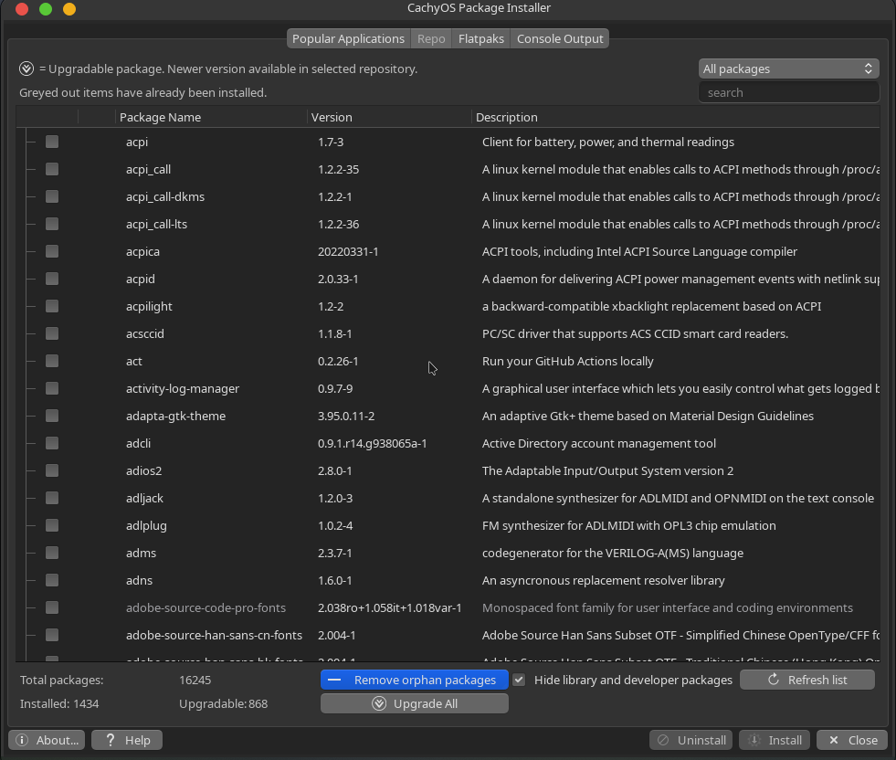
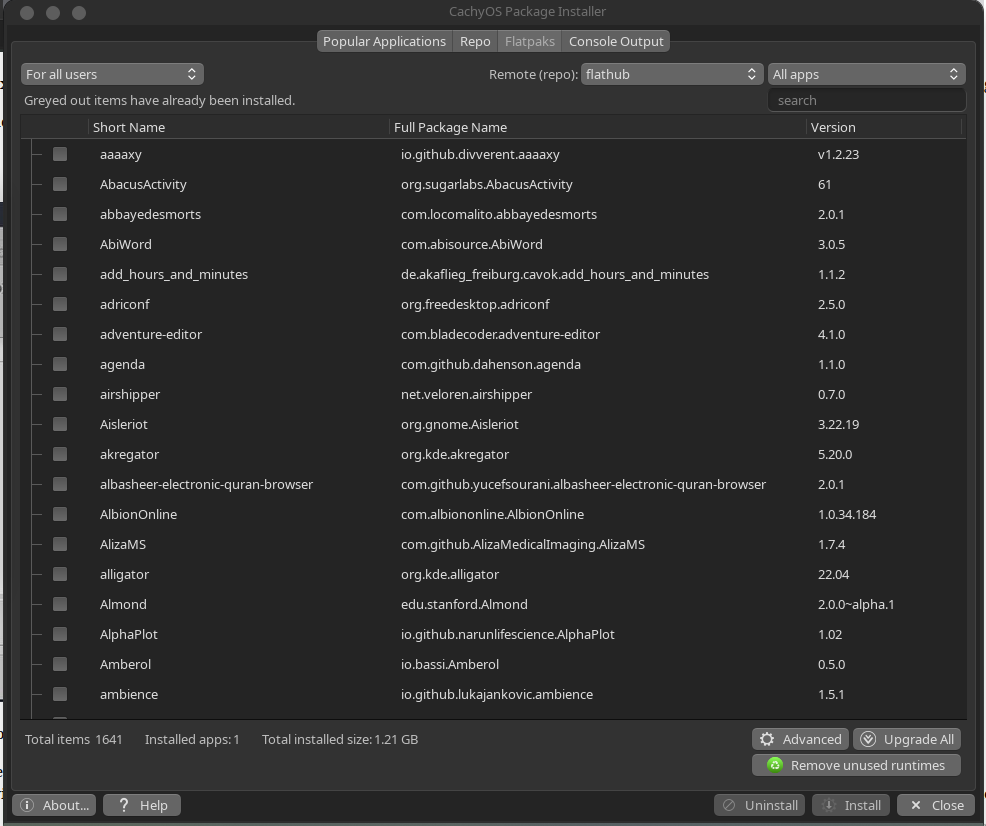

HELP: CachyOS Package Installer
This help is for CachyOS Package Installer. The maintains a version of “Popular Applications” tab as a standalone app.
It is listed in the Favorites of Whisker menu by default; but if that has been removed, click Start menu ≻ System ≻ CachyOS Package installer and provide the root password.

Popular Applications
- Expand the categories with the little arrow to see the packages available; more information (including screenshots where possible) is available by clicking on the small information icon.
- The Search box will parse application names and display matches in the tree.
- Check those that you want, and click Install.
- The terminal output will be displayed as first the repos are updated and then your packages are installed.
- If a package is already installed, you will have the option to uninstall or reinstall.
- If there are problems, there is a log at /var/log/cachyospi.log and /var/log/cachyospi.log.old for you to post in the forum.
Repo

This tab gives you access to the full catalog of apps available for CachyOS Linux. It has a limited feature set and is not a replacement for a full package manager like the default Synaptic. Consider the CachyOS PackageInstaller supplementary to Synaptic.
- Packages then can be manipulated in similar fashion to the Popular Applications Tab.
Flatpaks

Flatpaks are a type of package that has all the dependencies included that’s supposed to work on multiple Linux distributions.
- They are not perfect: some might not work well, might not follow your theme, etc.
- The first flatpak that you install will probably pull a huge runtime, so it will take a long time to download and will take a lot of space on your harddrive (probably around 2GB), but the next flatpak will most likely be able to use that runtime, so it gets a bit better after you install a couple of flatpaks.
- By default, the “flathub” remote “repo” is used by default. Others can be added via the Advanced dialog.
- You can also install flatpaks via ref files via the Advanced dialog